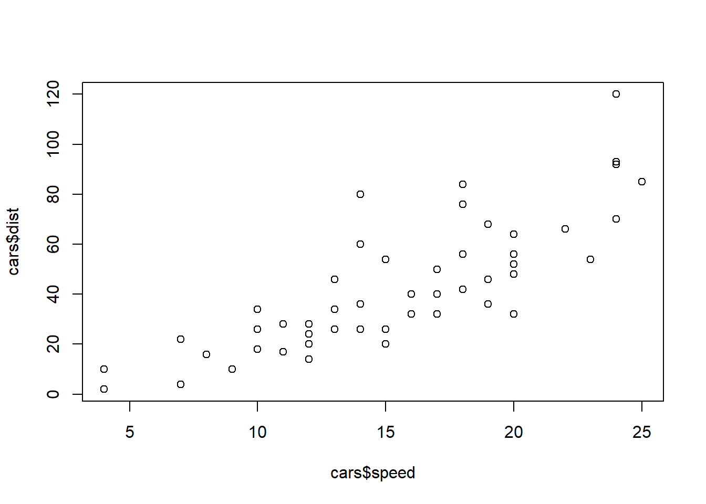

Chapter 16 Inferential Statistics and Hypothesis Testing
16.1 Theoretical Basis for Hypothesis Testing and Significance
Inferential statistics allow researchers to make inferences about a population based on data collected from a sample. A core component of inferential statistics is hypothesis testing, which is a systematic method used to evaluate data and make decisions about a population parameter based on sample analysis.
16.2 Null and Alternative Hypotheses
Concepts: - Null Hypothesis (H0): This hypothesis states that there is no significant difference or effect, and any observed difference is due to sampling or experimental error. It represents a statement of “no effect” or “no difference.” - Alternative Hypothesis (H1 or Ha): This hypothesis is considered when the null hypothesis is rejected. It suggests that there is a true effect, and observed differences are not due to chance alone.
Example in Context: Suppose a school claims their students’ average test score is 75. To challenge this, we could set up: - H0: The average score is 75 (µ = 75). - H1: The average score is not 75 (µ ≠ 75).
16.3 Type I and Type II Errors
Definitions: - Type I Error (α): Occurs when the null hypothesis is true, but we incorrectly reject it. It’s often called a “false positive.” The significance level (α), commonly set at 0.05, defines the probability of this error. - Type II Error (β): Happens when the null hypothesis is false, but we fail to reject it. This error is known as a “false negative.” The power of the test (1 - β) measures the ability to avoid this error.
Example in Practice: Using the school example, a Type I error would mean concluding that the average score is not 75 when it actually is 75. A Type II error would mean failing to reject the claim that the average is 75 when it is actually different.
16.4 p-Values and Confidence Intervals
Understanding p-Values: - A p-value is the probability of obtaining results at least as extreme as the observed results of a statistical hypothesis test, assuming that the null hypothesis is correct. - A small p-value (≤ 0.05) indicates strong evidence against the null hypothesis, leading to its rejection.
Confidence Intervals: - A confidence interval (CI) is a range of values that’s used to estimate the true parameter of the population. For example, a 95% CI indicates that if the same population is sampled 100 times, approximately 95 of those confidence intervals will contain the true population parameter. - CIs provide a measure of precision for an estimate.
Demonstration with R:
Suppose we have a sample of student scores from the school, and we want to test the claim:
set.seed(123)
sample_scores <- rnorm(30, mean = 75, sd = 10) # 30 sample scores with a mean of 75 and sd of 10
# Perform a One-Sample t-test
test_results <- t.test(sample_scores, mu = 75)
# Output the p-value and confidence interval
print(paste("p-value:", test_results$p.value))
print(paste("95% Confidence Interval:", paste(test_results$conf.int[1], test_results$conf.int[2], sep = " to ")))This section provides a foundational understanding of hypothesis testing, equipping students with the knowledge to apply these concepts effectively in their own research and analysis. Through practical examples and demonstrations, students are encouraged to explore these statistical tools and understand their implications in real-world scenarios.
16.5 Chi-Square, t-tests, z-tests, and Non-Parametric Tests
This section of the curriculum focuses on specific statistical tests used for hypothesis testing, each appropriate for different types of data and research questions. Understanding when and how to apply these tests is crucial for proper data analysis.
16.5.1 Conducting and Interpreting Chi-Square Tests
Purpose and Application: - The Chi-Square test is primarily used to determine whether there is a significant association between two categorical variables. It’s often applied in market research, opinion polls, and educational research, among other fields.
Example and Demonstration: - Consider a study wanting to explore if diet preference (vegetarian vs. non-vegetarian) is associated with gender among college students.
# Sample data: Counts of male and female students preferring vegetarian and non-vegetarian diets
diet_data <- matrix(c(30, 70, 45, 55), nrow = 2,
dimnames = list(gender = c("Male", "Female"),
diet = c("Vegetarian", "Non-Vegetarian")))
# Perform Chi-Square Test
chi_test <- chisq.test(diet_data)
# Output test results
print(chi_test)16.5.2 One-sample and Two-sample t-tests
Purpose and Application: - One-sample t-test: Tests whether the mean of a single group differs from a specified mean. - Two-sample t-test (independent samples): Tests whether the means of two groups are different.
Example and Demonstration: - One-sample t-test: Testing if the average IQ of a sample of students is different from the national average IQ of 100. - Two-sample t-test: Comparing the average test scores of two different classes.
# One-sample t-test
iq_scores <- rnorm(25, mean = 102, sd = 15) # Sample of 25 students
t_test_one <- t.test(iq_scores, mu = 100)
# Two-sample t-test
class1_scores <- rnorm(30, mean = 78, sd = 10)
class2_scores <- rnorm(30, mean = 85, sd = 10)
t_test_two <- t.test(class1_scores, class2_scores)
# Output test results
print(t_test_one)
print(t_test_two)16.5.3 Non-Parametric Alternatives to Parametric Tests
Purpose and Application: - Non-parametric tests do not assume a specific distribution in the data and are useful when the assumptions for parametric tests (like normal distribution) are not met. These include tests like the Mann-Whitney U test, Wilcoxon Signed-Rank test, and Kruskal-Wallis test.
Example and Demonstration: - Using the Mann-Whitney U test to compare the distributions of two groups’ data that are not normally distributed.
16.6 Exercises for Inferential Statistics and Hypothesis Testing
To consolidate the concepts learned in this chapter, the following exercises are designed to engage students in practical applications of inferential statistics methods. These activities will help students gain hands-on experience in hypothesis testing, understanding test assumptions, and interpreting results.
16.6.1 Exercise 1: Conducting a Chi-Square Test
Objective: Assess whether there is a significant relationship between two categorical variables.
Scenario: A local library wants to determine if there is an association between gender and preference for fiction vs. non-fiction books. You are provided with the following data collected from a survey:
- Males: 40 like fiction, 60 like non-fiction.
- Females: 70 like fiction, 30 like non-fiction.
Task: Perform a Chi-Square test to determine if gender is associated with book preference.
Steps:
16.6.2 Exercise 2: One-sample t-test
Objective: Test if the average measurement from a sample differs significantly from a known or hypothesized population mean.
Scenario: An educational researcher claims that students on average spend 3.5 hours per day studying. You have data from a random sample of 25 students.
Task: Perform a one-sample t-test to see if there is a significant difference from the national average.
Steps:
16.6.3 Exercise 3: Exploring Non-Parametric Tests
Objective: Use non-parametric methods to test hypotheses when data do not meet the assumptions required for parametric tests.
Scenario: You suspect that two groups of plants have different growth rates, but the data are not normally distributed.
Task: Apply the Mann-Whitney U test to compare the growth rates of the two groups.
Steps:
16.6.4 Introduction
- Overview of R and the RStudio Interface
- History and Philosophy of R
- Navigating RStudio: Panels, Scripts, Console, and Environment
- RStudio Projects and Workspace Management
- Installing and Managing Packages
16.6.5 R Programming Fundamentals (Light Focus)
- Basics of R Syntax and Functions
- Variables and Data Types
- Control Structures: Loops and Conditional Statements
- Writing and Using Functions
- Debugging and Error Handling
- Efficient Programming Practices
- Code Organization and Readability
- Introduction to R’s Vectorized Operations
- Best Practices for Speed and Performance
- Using R Profiler for Code Optimization
16.6.6 Data Structures and Data Handling in R (Light Focus)
- Overview of Vectors, Matrices, Lists, and Data Frames
- Creating and Manipulating Vectors
- Operations with Matrices and Arrays
- Understanding Lists and Their Uses
- Data Frames for Tabular Data
- Data Handling Techniques with dplyr
- Selecting, Filtering, and Arranging Data
- Mutating and Summarizing Data Sets
- Joins and Data Merging Techniques
- Group Operations with
group_byandsummarise
16.6.7 Data Visualization in R (Light Focus)
- Introduction to ggplot2 and Basic Plotting
- ggplot2 Syntax and Layering System
- Creating Histograms, Bar Plots, and Scatter Plots
- Aesthetics and Themes
- Customizing Graphs for Data Presentation
- Customizing Axes, Legends, and Labels
- Fine-tuning Scales and Coordinates
- Adding Annotations and Custom Geometries
16.6.8 Working with Different Types of Data (Light Focus)
- Overview of Qualitative and Quantitative Data
- Defining Qualitative vs Quantitative Data
- Sampling Strategies and Data Collection Methods
- Structuring Data Sets for Analysis
- Best Practices in Data Collection and Cleaning
- Identifying and Handling Missing Data
- Data Type Conversions and Formatting
- Detecting and Dealing with Outliers
16.6.9 Descriptive Statistics
- Measures of Central Tendency, Variability, and Standard Scores
- Calculating Mean, Median, Mode
- Variance, Standard Deviation, and Range
- Normalization and Standardization of Scores
- Visualizing Distributions and Relationships
- Box Plots, Violin Plots, and Density Plots
- Pairwise Relationships with Scatter Plots and Correlograms
- Introduction to Multidimensional Scaling and PCA
16.6.10 Probability Distributions and Statistical Concepts
- Understanding and Applying Common Probability Distributions
- Binomial, Poisson, and Normal Distributions
- Continuous vs Discrete Distributions
- The Central Limit Theorem and Its Importance
- Exploring Random Variables and Expected Values
- Defining and Calculating Expected Values
- Variance and Standard Deviation of Random Variables
- The Law of Large Numbers
16.6.11 Inferential Statistics and Hypothesis Testing
- Theoretical Basis for Hypothesis Testing and Significance
- Null and Alternative Hypotheses
- Type I and Type II Errors
- p-Values and Confidence Intervals
- Chi-Square, t-tests, z-tests, and Non-Parametric Tests
- Conducting and Interpreting Chi-Square Tests
- One-sample and Two-sample t-tests
- Non-Parametric Alternatives to Parametric Tests
16.6.12 Analysis of Variance (ANOVA)
- Conducting and Interpreting One-Way and Two-Way ANOVA
- Assumptions of ANOVA
- Interpreting ANOVA Tables
- Post Hoc Tests and Multiple Comparisons
- Understanding the F-test and its Applications
- The F Distribution and the F Ratio
- Between-groups and Within-groups Variance
- Applications in Experimental Design
16.6.13 Regression Analysis
- Simple and Multiple Linear Regression (OLS, MLR)
- Constructing and Fitting Regression Models
- Understanding Coefficients and Predictions
- Multiple Regression and Adjusting for Confounders
- Diagnostics and Assumptions of Linear Models
- Residual Analysis and Model Fit
- Checking for Heteroscedasticity and Multicollinearity
- Model Selection Criteria (
AIC, BIC, R-squared)
16.6.14 Categorical Data Analysis
- Introduction to Logistic Regression
- Odds Ratios and Logit Function
- Model Fitting and Interpretation
- Assessing Model Goodness of Fit
- Modeling and Interpretation of Binary Outcomes
- Predictive Modeling with Binary Data
- Evaluating Model Performance (ROC Curves, AUC)
- Multiclass Logistic Regression
16.6.15 Advanced R Programming Techniques
- Writing Functions and Loops for Automating Tasks
- Function Arguments and Return Values
- Looping Constructs:
for,while, andapplyFamily - Avoiding Loops: Vectorization and Parallel Processing
- Advanced Data Manipulation and Transformation
- Tidyverse Approaches to Data Wrangling
- Dealing with Text and Categorical Data
- Working with Dates and Times
16.6.16 Data Import and Export
- Techniques for Efficient Data Import and Export
- Reading and Writing CSV, Excel, and JSON
- Connecting to Databases with R
- Using APIs for Data Retrieval
- Working with Different File Formats and Databases
- Understanding File Formats and Their Uses
- Data Storage and Retrieval Best Practices
- Introduction to SQL for Data Analysis
16.6.17 Bivariate and Multivariate Analysis
- Exploratory Data Analysis Techniques
- Summary Statistics and Initial Data Checks
- Exploring Relationships with Crosstabs and Mosaic Plots
- Cluster Analysis and Discriminant Analysis
- Correlation, Causation, and Regression Techniques
- Pearson and Spearman Correlation Measures
- Path Analysis and Structural Equation Modeling
- Multivariate Regression Models
16.6.18 Practical Applications in R
- Case Studies and Real-World Data Analysis
- Sector-specific Analysis (e.g., Healthcare, Finance, Marketing)
- Interpreting Results in a Business Context
- Addressing Ethical Considerations in Data Analysis
- Developing a Capstone Project to Apply Learned Skills
- Identifying a Problem and Formulating Questions
- Data Collection and Analysis Plan
- Presenting Findings and Recommendations
16.6.19 Reporting and Communication
- Crafting Reports with R Markdown
- Basics of R Markdown for Reporting
- Dynamic Report Generation and Parameterized Reports
- Creating Interactive Dashboards with Shiny
- Effective Communication of Statistical Findings
- Visualization Techniques for Storytelling with Data
- Translating Statistical Outputs into Business Insights
- Communicating Uncertainty and Model Limitations
When creating R Markdown (Rmd) documents, you can embed different types of code chunks that serve various purposes. These chunks can be tailored for demonstration purposes, to show pre-run code with results, and to provide interactive code exercises. Here’s how you can handle each usage scenario in your Rmd documents, which will also work when you convert them into a Bookdown project:
16.6.20 Usage 1: Code for Demonstration (Non-Executable)
To include code for demonstration purposes where the code is displayed but not run, you can use the eval=FALSE chunk option. This will display the code without actually executing it when the document is knit.
### Usage 2: Pre-Run Code Showing Results
To display code along with its results without allowing it to be changed, simply include the code chunk without any special options. When the Rmd document is knit, the code will run, and the output will be included in the document.
```r
``` r
# Pre-run code for results
plot(cars$speed, cars$dist)
The output, such as plots or tables, will be generated and embedded into the final document automatically.
### Usage 3: Interactive Code Writing and Execution
To allow users to write and run code within the Rmd document, you can use a standard R code chunk. Once the Rmd is knit, the code can be run in the output document if you are generating an HTML document using the `runtime: shiny` option in the YAML header. This enables interactivity in the HTML document but note that this feature won’t be available in PDFs or other non-interactive formats.
Here’s what the YAML header would look like to enable Shiny for an HTML document:
```yaml
---
title: "Interactive Book"
output: html_document
runtime: shiny
---And here’s how you include a code chunk that the user can interact with:
## Min. 1st Qu. Median Mean 3rd Qu. Max.
## 4.0 12.0 15.0 15.4 19.0 25.0```
If you want to provide a terminal for students to write and execute commands, you can embed a Shiny app within your Bookdown book. However, the app must be hosted on a Shiny server or a service like shinyapps.io, and the book must be rendered as an HTML document.
16.6.21 Additional Tips for Bookdown
When transitioning from Rmd files to Bookdown, keep the following in mind:
Chunk Naming: It’s good practice to name your chunks uniquely to avoid duplicate label issues in Bookdown when combining multiple Rmd files.
Chunk Options: Review the chunk options available in knitr. Options like
include=FALSEcan hide code but show its output,echo=FALSEwill hide the code but execute it, etc.Interactive Documents: For full interactivity, like Shiny exercises at the end of topics, ensure your output format supports it (i.e., HTML).
External Resources: For exercises, you might want to consider external resources like DataCamp’s Workspace or other interactive platforms where students can practice.
Session Management: Manage the R session carefully for reproducibility. Bookdown compiles documents in a fresh R session by default, which is usually what you want for consistency.
Output Management: Use the
_output.ymlfile to manage output options for different formats (HTML, PDF, etc.) within Bookdown.
Remember that the interactivity of code chunks that allow users to modify and run code is limited to HTML documents with Shiny capabilities and won’t be interactive in PDFs or ePub formats. For a fully interactive online learning experience, you may need to complement your Bookdown content with external tools or platforms that support interactive coding.